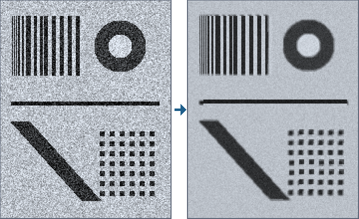

Restore what is in the data – and prove what would be invented
Function overview for the presentation of the envisionz framework, as of 28 Sep 2026. Picture and sound restoration for
video forensics: determine the source material, measure, plan and log; cuts, fields and pulldown; motion estimation,
multi-frame fusion, lucky imaging and drizzle; deconvolution, deblocking and guided chroma; filter chain and player with look-ahead.
For each method: purpose, API, use in the framework, applications, examples. The examples are shortened.
Many API names are German (e.g. Verschmelzung = fusion, Glueckstapel = lucky stack, Entschraenkung = deinterlacing, Protokoll = processing log); they are shown unchanged.

Glueckstapel: a degraded test image before and the result of sixteen images after.Principles of the module
Determining the source material envisionz.restore.quelle
Quelle, Quellenart, Merkmal – inferred automatically, overridable at any time
From the findings of the profile the most likely source type is inferred, with confidence, reasoning, indications and open questions – what could only be measured on the picture. Quellenart holds guide values per format: real resolution in lines (VHS 240, S-VHS 400, DV 530), chroma bandwidth (VHS 0.4 MHz), whether dropouts and time-base errors can occur. A VHS recording on DVD is 720 pixels wide but carries only about 240 lines.
Methods
Quelle.erschliesse(befunde),festlegen(art, begruendung),Quelle.auswahl()art(),vertrauen(),begruendung(),anzeichen(),offeneFragen()→Merkmal,verschraenkt(),pulldown()Quellenart.VHS…DIGITAL,UNBEKANNT;linien(),farbBandbreite(),aussetzer(),analogesBand()
Used in
What for
The single most important statement of a restoration: which defects can occur and which methods apply.
Example – infer and override
Quelle q = Quelle.erschliesse(befunde); // findings from framework-media
System.out.println(q.art() + ", " + q.vertrauen() + ": " + q.begruendung());
q = q.festlegen(Quellenart.VHS, "Besitzerin sagt: VHS-Kassette");Measuring on the picture envisionz.restore.mess
Bildmessung and Vorverarbeitung – what the data stream does not reveal
Bildmessung closes the gap from “assumed” to “measured”: bandwidth ratio of chroma to luma (clean 4:2:0 about 0.5 to 0.7, VHS a fraction of that), head-switching noise in the bottom lines, line jitter; from these, the compatible source types. Vorverarbeitung detects whether the material was already sharpened or denoised during transfer – then resharpening only amplifies the overshoots into halos.
Methods
new Bildmessung().auswerten(List<Bild>),bandbreitenverhaeltnis(),zeilenzittern(),kopfumschaltZeilen(),vereinbar(),befunde()new Vorverarbeitung().auswerten(folge),geschaerft(),befunde()
Used in
What for
Back up the determination of the source material; avoid treating material twice.
Bildguete – noise, sharpness and blockiness before and after
None of the three numbers says anything on its own. A filter is only good if it lowers noise and leaves sharpness intact; if both fall, picture content is lost. So they are measured in pairs, before and after treatment.
Methods
Bildguete.messen(y, breite, hoehe),rauschen(),schaerfe(),blockmass()vorher.vergleich(nachher)
Used in
What for
Whether a filter denoises or merely blurs.
Example
Bildguete vorher = Bildguete.messen(roh, 720, 576);
System.out.println(vorher.vergleich(Bildguete.messen(gefiltert, 720, 576)));Plan and log envisionz.restore.plan · envisionz.restore.protokoll
Planer and Schritt – a route to investigation and improvement
From findings and source an ordered sequence of steps is built, each with reasoning, settings, rank (necessary, recommended, optional, not advised) and kind (reconstruction, estimation, generation, measurement). The order follows fixed dependencies: pulldown before everything else, cut detection before fusion, fusion before deconvolution, deblocking before edge analysis, generative steps last.
Methods
Planer.erstelle(befunde, quelle)→List<Schritt>Schritt:nummer(),name(),art(),rang(),begruendung(),parameter()
Used in
What for
A proposal of what to do with a recording, before anything is changed.
Example
for (Schritt s : Planer.erstelle(befunde, q))
System.out.println(s.nummer() + ". " + s.name() + " [" + s.art() + ", " + s.rang() + "] " + s.begruendung());Protokoll – what was done where with which values
Without a log a restoration result cannot be checked. Per step: what, of which kind, on what, with which settings, what was measured. At the end a balance by kind and the statement whether the result is verifiable. Values are written to the file in input order.
Methods
Protokoll(vorhaben, quelle),schritt(name, art, bereich)→Zeile:wert,messung,bemerkung,fertig()ausSteckbrief(befunde),eintraege(),bilanz(),belegbar(),alsText(),schreiben(pfad)
Used in
What for
Verifiable results that can still be traced after half a year.
Example
Protokoll p = new Protokoll("Aufführung 1994", "VTS_01");
p.schritt("Zeitmittel", Protokoll.Art.SCHAETZUNG, "Bilder 1200–1450")
.wert("schwelle", 8).messung("rauschen vorher", 5.1).messung("rauschen nachher", 3.2).fertig();
p.schreiben(Path.of("protokoll.txt"));Cuts, fields, pulldown envisionz.restore.schnitt · envisionz.restore.deint
Schnitterkennung – never average across a cut
The IFO names cell boundaries, but a compilation has cuts in the middle of a cell. Two measures are used together: the jump in picture difference and the jump in the luma distribution – the second is insensitive to motion. A static sequence with slight noise is not taken for a cut. Background, formulas and pseudocode →
Methods
new Schnitterkennung().schwelle(s).finden(List<Bild>)→Schnitt(vorBild, bildsprung, verteilungssprung)befunde(schnitte, bilder)
Used in
What for
The boundaries within which fusion and stacking are allowed.
Entschraenkung and Pulldown
Entschraenkung: weave (right when static, comb artefacts otherwise), line doubling (always right, half the spatial resolution) or motion-compensated – the missing lines from the neighbouring field, shifted by the motion; the fallback is line doubling. Pulldown recognises the 3:2 cadence by one pair of same-parity fields out of every five not differing, and removes the repeats – they are not new observations.
Methods
Entschraenkung.weben(oben, unten, breite, feldHoehe),verdoppeln(feld, breite, feldHoehe, oben)new Entschraenkung().toleranz(t).entschraenken(feld, nachbar, breite, feldHoehe, oben)→Ergebnis(bild, ausNachbar, verschiebung)Pulldown.erkennen(felder, breite, hoehe)→Befund(gefunden, phase, staerke, wiederholungen),umkehren(felder, befund)
Used in
What for
For interlaced material the biggest single lever; clean NTSC film material before any fusion.
Estimating motion envisionz.restore.bewegung · envisionz.restore.fluss
Bewegungsfeld – block search with quality per block
One displacement per 16 × 16 block, searched logarithmically (27 instead of 625 positions at ±12 pixels), neighbour vectors as starting points, optionally with sub-pixel precision. Block search finds the most similar patch, not the true motion; each block therefore carries its quality (the remaining deviation without the path penalty), and a path penalty derived from the noise prevents random vectors in flat areas. Noise estimate and camera motion follow from the field. Background, formulas and pseudocode →
Methods
Bewegungsfeld.suchen(mitte, nachbar, breite, hoehe, suchweite[, strafe[, subpixel]]),strafeFuer(sigma)vx,vy,genauX,genauY,guete(spalte, zeile),ruhe,rauschen()kamerabewegung(hoechsteGuete),kamerabewegungGenau(...),anteilMitKamera(hoechsteGuete, toleranz)
Used in
What for
Tripod or hand-held? Basis for motion-compensated averaging, stacking and drizzle.
Example – measure the noise, then search with a matching penalty
double sigma = Bewegungsfeld.suchen(b1, b0, 720, 576, 12).rauschen();
Bewegungsfeld f = Bewegungsfeld.suchen(b1, b0, 720, 576, 12, Bewegungsfeld.strafeFuer(sigma), true);
double[] kamera = f.kamerabewegungGenau(6.0);LucasKanade, Fluss, GlobaleVerschiebung – dense flow and whole-picture shift
Lucas-Kanade, pyramidal and iterative with back-warping, so that displacements of ten pixels and more are captured. GlobaleVerschiebung estimates two unknowns against hundreds of thousands of equations – heavily over-determined and stable, robust against outliers; restfehler() warns when the estimate is off.
Methods
new LucasKanade().stufen(n).fenster(n).iterationen(n).daempfung(d).schaetzen(a, b, breite, hoehe)→FlussFluss:dx(),dy(),guete(),medianVerschiebung(mindestGuete),medianIn(...),messbarerAnteil(...)new GlobaleVerschiebung().stufen(n).iterationen(n).schaetzen(a, b, breite, hoehe)→{dx, dy},restfehler()
Used in
What for
Alignment for multi-frame fusion; motion on stage separated from camera shake.
Multi-frame methods envisionz.restore.fuse · envisionz.restore.bewegung
Verschmelzung and Vertrauen – the forensically robust core
Consecutive pictures are aligned globally and fused; noise drops roughly with the square root of the number of observations. Outliers – people moving – are rejected with a scale taken from the picture itself, and the rejected ones are counted: Vertrauen grades each pixel as supported, thin, single or replaced. Background, formulas and pseudocode →
Methods
new Verschmelzung().toleranz(t).verschmelzen(folge, bezug, breite, hoehe)→Ergebnis(bild, vertrauen, verschiebungen)Vertrauen.stufe(i)(BELEGT,DUENN,EINZELN,ERSETZT),anteil(stufe),mittel(),alsGraustufen()
Used in
What for
Reveal fine structures that were buried in noise in a single picture – and show where the result is thinly supported.
Glueckstapel and Drizzle – methods from astronomy
Lucky imaging (Fried 1978): from many pictures of the same shot choose the sharpest, align them to the sharpest one and stack with sigma clipping around the median – a tape dropout disappears completely instead of being spread over thirty pictures. Drizzle (Fruchter and Hook 2002): sub-pixel-shifted pictures are dropped as shrunken droplets onto a finer grid; the extra resolution is collected, not invented. Computed without sub-pixel alignment it is the counter-probe of its own claim.
Methods
Glueckstapel.stapeln(bilder, breite, hoehe, anteil, suchweite, klippSigma[, hoechsteGuete])→Ergebnis(bild, genommen, verworfen, anteilVerworfen)Glueckstapel.schaerfe(y, b, h),rauschen(y, b, h),guetegrenzeFuer(sigma)Drizzle.rechnen(bilder, breite, hoehe, massstab, tropfen, suchweite, hoechsteGuete[, subpixel])Drizzle.Ergebnis:bild(),loecher(),mittlereDeckung(),lochmaske()
Used in
What for
Still frames as evidence: less noisy than any single picture and, with shifted sampling, finer resolved.
Example – stack and drizzle
Glueckstapel.Ergebnis st = Glueckstapel.stapeln(bilder, 720, 576, 0.3, 12, 2.5);
Drizzle.Ergebnis dz = Drizzle.rechnen(bilder, 720, 576, 2, 0.7, 12, 6.0);
System.out.printf("holes %.1f %%%n", 100 * dz.loecher());Sharpness, blocks and colour envisionz.restore.filter · envisionz.restore.farbe
Entfaltung and Kachelentstoerung
Entfaltung after Richardson and Lucy: preserves total brightness, never yields negative values, but amplifies noise – hence only after fusion and with few iterations, otherwise rings appear. Kachelentstoerung smooths only at the 8×8 grid boundaries and only where the step stands alone like a compression artefact; real edges remain. Background, formulas and pseudocode →
Methods
Entfaltung.gauss(sigma),Entfaltung(kern, kernBreite, kernHoehe),anwenden(bild, breite, hoehe, schritte)new Kachelentstoerung().staerke(s).anwenden(ebene, breite, hoehe),Kachelentstoerung.kachelmass(ebene, breite, hoehe)
Used in
What for
Soften tape blur; remove block edges of a low-bit-rate Video CD before edges are analysed.
Example
double[] ohneKacheln = new Kachelentstoerung().staerke(1.0).anwenden(ebene, 720, 576);
double[] schaerfer = Entfaltung.gauss(1.2).anwenden(ohneKacheln, 720, 576, 8);Farbaufloesung – a full colour picture from half-resolution chroma planes
Three ways from 360 × 288 to 720 × 576: repeat (shows the source as it is), linear (no staircases, but soft colour across edges) and guided – luma leads, and among the surrounding chroma samples those at similar brightness count most. The colour edge moves onto the luma edge; the colour stays what it was.
Methods
Farbaufloesung.wiederholen(c, fb, fh, breite, hoehe),linear(...)Farbaufloesung.gefuehrt(c, fb, fh, y, breite, hoehe, haerte)– hardness about twice the noise deviation
Used in
What for
Remove frayed colour edges without inventing colour.
Filter chain and player envisionz.restore.spiel
Bildfilter, Zeitmittel, Bewegungsmittel, Filteradapter
A filter gets the picture and the following (optionally also the previous) pictures and says how far it looks ahead. Zeitmittel costs 0.54 ms per picture and is most effective against tape noise, but leaves moving pixels above a threshold unchanged. Bewegungsmittel first searches where a patch has moved and averages along the motion over a symmetric window; the threshold checks every pixel after the shift. Filteradapter turns deconvolution, deblocking and deinterlacing into filters and chains filters.
Methods
Bildfilter.anwenden(bild, zukunft, breite, hoehe),name(),vorausblick(),rueckblick()new Zeitmittel():schwelle(s),fenster(n)new Bewegungsmittel():schwelle,fenster,suchweite,strafe,mitSuche,uebernahme(),mittlererWeg()Filteradapter.Entfalten,Kacheln,Entschraenken,new Filteradapter.Kette(f1, f2, …)
Used in
What for
Denoise during playback and in batch mode, with the same filters.
Vorlaufkette, Abspieler, Bildquelle, Sprungsucher – decode, restore, output
Temporal filters need the future, MPEG reorders anyway, and filter costs vary – hence a look-ahead, even though it would be fast enough (measured 8.65 ms decoding per picture against a 40 ms budget). Abspieler computes ahead in its own thread and outputs clocked by the wall clock. Sprungsucher finds the sector before a wanted picture number via the time code of the GOP headers with secant steps, without decoding a single picture, and always lands before the target.
Methods
Vorlaufkette(breite, hoehe, tiefe, vorausblick),filter(f),einspeisen(y),bereit(),entnehmen()→Paar,abschliessen()Abspieler(quelle, rate, tiefe, ausgabe),start(),pause(),springe(nummer),sekunde()Bildquelle,Stromquelle(erzeuger, breite, hoehe, kapazitaet),Listenquelle,Vorrat(tiefe)Sprungsucher.suche(vobs, zielBild, bildzahl, rate, versuche)→Fund(sektor, bild, zeitcode)
Used in
What for
Play an eighty-minute DVD recording restored and jump to any position in seconds.
Example – filter chain without player, up to the end of the stream
Vorlaufkette kette = new Vorlaufkette(720, 576, 4, 2);
kette.filter(new Filteradapter.Kette(new Zeitmittel(), new Filteradapter.Kacheln()));
for (int[] y : helligkeiten) {
kette.einspeisen(y);
while (kette.bereit()) ausgeben(kette.entnehmen().behandelt());
}
kette.abschliessen(); // ausgeben: own method
while (kette.wartend() > 0) ausgeben(kette.entnehmen().behandelt());Sound envisionz.restore.ton
Tonspur and Tonmessung – the defects of a tape
Mains hum at 50 Hz and multiples, measured against the spectral neighbourhood and window by window over the whole track; noise floor in the quietest sections; clipping as the share of full-scale values (not repairable); dropouts as total silence in the middle of the signal; DC offset.
Methods
Tonspur(kanaele, abtastrate),Tonspur.ausPcm16(pfad, kanalZahl, abtastrate),sekunden()new Tonmessung().auswerten(tonspur),brummen50(),rauschteppich(),befunde()
Used in
What for
Assess the sound track of a performance – a voice is recognised again, a face of 240 lines is not.
Example
Tonmessung m = new Tonmessung();
m.auswerten(Tonspur.ausPcm16(Path.of("ton.pcm"), 2, 48000));
m.befunde().forEach(System.out::println);Usage matrix in the framework
Which modules use which packages today, counted in the source code (excluding probes).
| Module | quelle | plan | mess | bewegung | farbe | spiel | schnitt / deint / fluss / fuse / filter / protokoll / ton | What for |
|---|---|---|---|---|---|---|---|---|
| app-forensik | ● | ● | ● | ● | ● | ● | Profile with source and plan; playback with filter chain; stacking, drizzle and magnifier evidence; VideoRestore |
Filteradapter. The figures for fusion and for line doubling of bottom fields in the work-thread document date from before the corrections of 15 Sep 2026 and have not been re-measured.